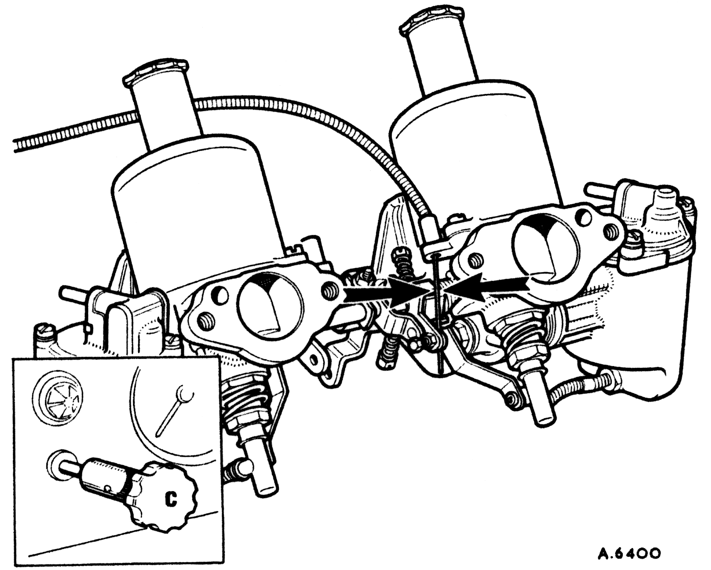
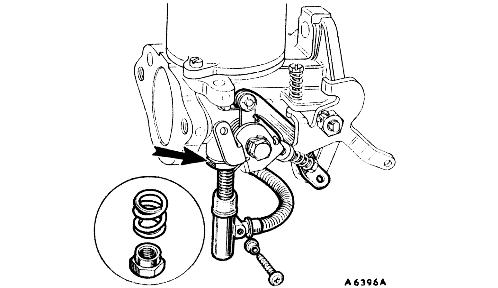
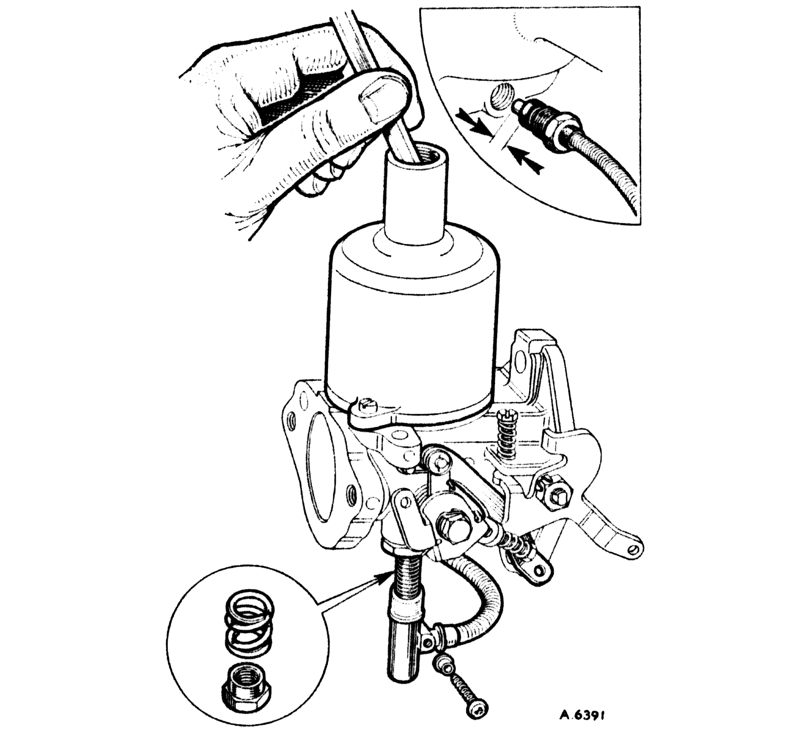

Tuning
Multi-carburetters (continued)

14
- Reconnect the mixture control wire with about 1/16 in. (1.6 mm.) free movement before it starts to pull on the jet levers.
- Pull the mixture control knob until the linkage is about to move the carburetter jets, and adjust the fast idle screws, comparing the intensity of the air intake 'hiss' to give an engine speed of about 1,000 r.p.m. when hot.
- Refit the air cleaners.
Adjusting and Servicing
Jet centring
15
The piston should fall freely onto the carburetter bridge with a click when the lifting pin is released with the jet in the fully up position. If it will only do this with the jet lowered then the jet unit requires re-centring. This is done as follows:
16
- Remove the jet head screw to release the control linkage.
- Withdraw the jet, disconnecting the fuel feed pipe union in the float-chamber, and removing the rubber sealing washer. Remove the jet locking spring and adjusting nut.
- Replace the jet and insert the fuel feed pipe connection into the float-chamber.
- Slacken the jet locking nut until the assembly is free to rotate.

17
- Remove the piston damper and apply pressure to the top of the piston rod with a pencil.
- Tighten the jet locking nut keeping the jet hard up against the jet bearing.
- Finally check again as in item 15.
- Re-fit the jet locking spring and adjusting nut. Before replacing the fuel feed pipe into the float chamber, fit the rubber sealing washer over the end of the plastic pipe so that at least 3/16 in. (4.8 mm.) of pipe protrudes (see inset). Reassemble the controls.
- Refill the piston dampers with the recommended engine oil (see item 8).
Cleaning

18
- At the recommended intervals mark for reassembly and carefully remove the piston/suction chamber unit.
- Using a petrol-moistened cloth, clean the inside bore of the suction chamber and the two diameters of the piston.
- Lightly oil the piston rod only and reassemble as marked.
- Refill piston damper (see item 8).